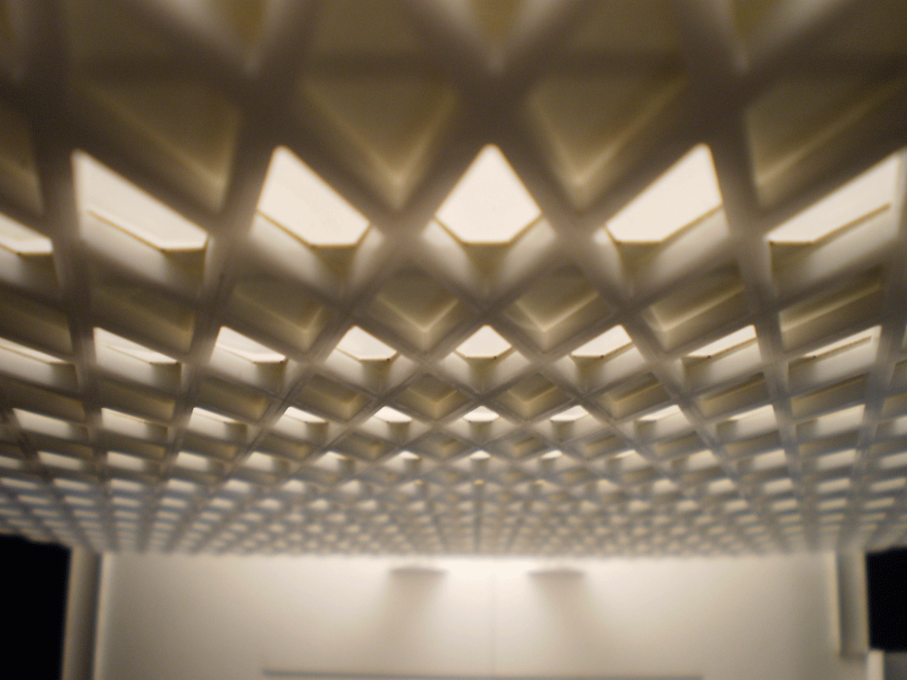
Digital Fabrication Lab
Exploring techniques for constructing effective study, working, & presentation models
- Type: Digital Technology, Model Building, Special Topics Workshop
- Date: Summer 2012
- Location: Philadelphia, Pennsylvania
The prevalence of digital technologies in the design process is widespread in the current practice of architecture. developing a knowledge of the skills, workflows, and techniques for these new tools of the trade is invaluable. knowledge of the function and types of tools and materials allows the designer to make them their own instead of letting the tools determine the result. this workshop consisted of two phases. the first consisted of performing a building case study and reproducing various scale models of the existing building utilizing the efficiencies of digital fabrication tools. the seond stage was based on a conceptual building of our own design, resulting in and understanding of developing & manipulating parametric models, 3d printing preparation, and rapid detail model construction.
Phase I
- Team Members: Scott McMillen, Eric Simon
- Size: 2’-6” wide x 2’-0” deep x 2’-2” tall building model (76cm wide x 60 cm deep x 69 cm tall)
Study of patterns and repetition in architectural precedents. Our group researched the IBM Building (currently the Steelworkers Building) located in Pittsburgh, Pennsylvania and built in the 1960's. The expressed structural steel diagrid serves as the building support and enclosure, revolutionary for its time.
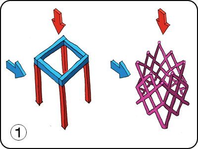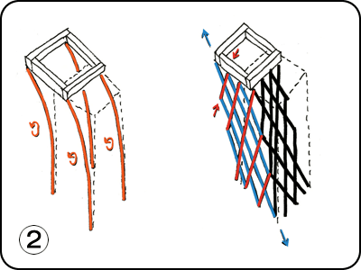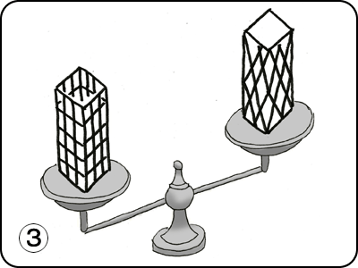
Diagrid Structural Concepts
1. Diagrids resist both lateral & gravity loads within the same structural components.
2. Diagrids resist lateral shear loads through axial tension & compression instead of moment bending.
3. Diagrids require less materials for an equally rigid structure, with these efficiencies best realized in high rise buildings.
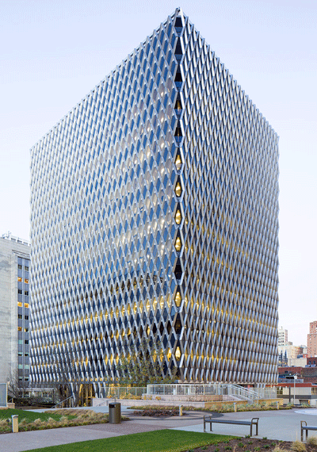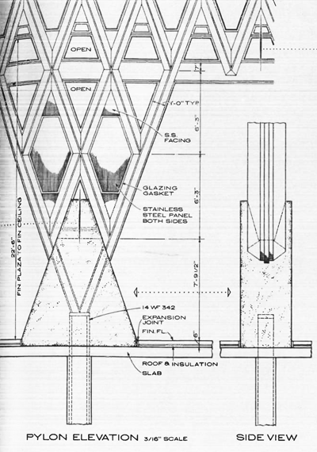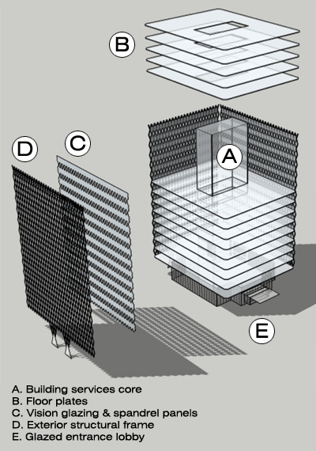
IBM Building in Pittsburgh | Research of construction drawings and details | Components and planning for model
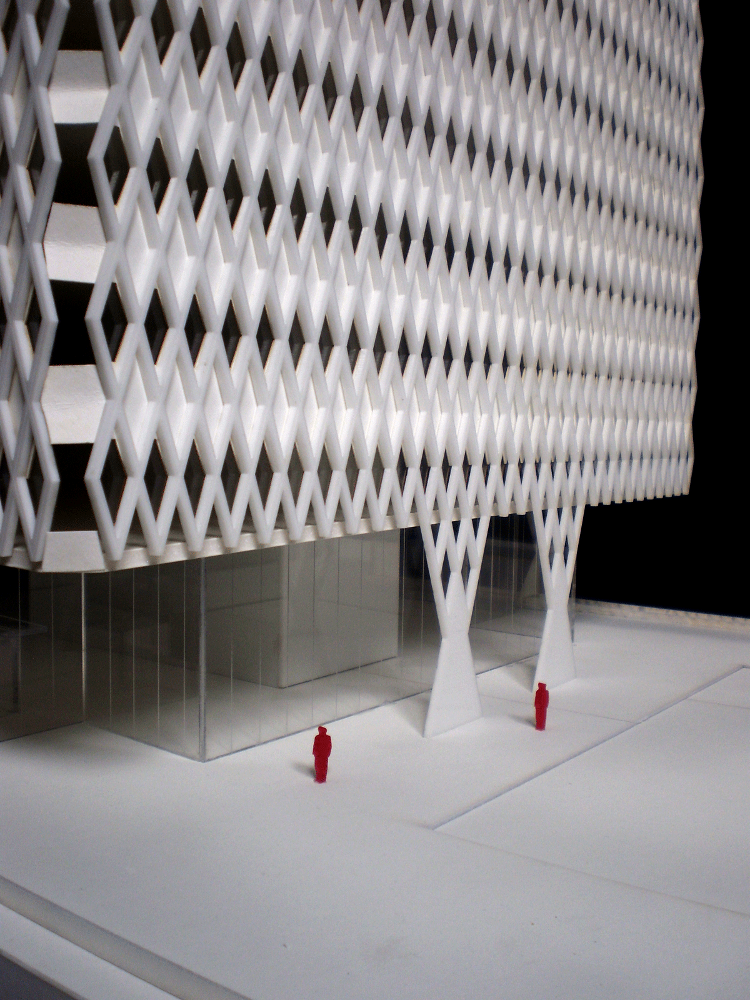
Plaza level view of completed building model
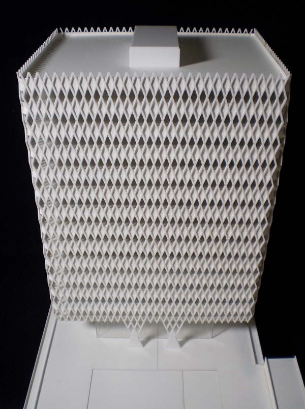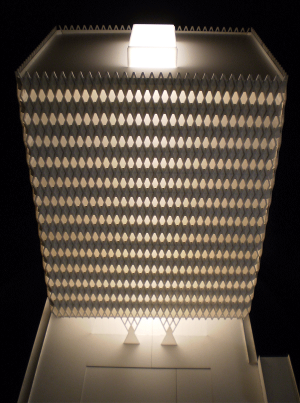
Overall model views
Phase II
- Team Members: Patrick Barendt, Dominic Lacivita
- Size: 3” long x 3” wide x 1’-2” high building model (91cm wide x 8cm deep x 38cm tall) | 12” long x 6” wide x 8” high section detail model (31cm wide x 15cm deep x 20cm tall)
Study of pattern development with functional integration into an original architectural design. The prompt was a high-rise tower to be located on Market Street in Philadelphia. The proposed design uses a variable opening aperture as the inspiration for an enclosure system that that responds to natural lighting. A double layered facade features an inboard structural frame in phase with an outboard shading screen with the amount of open area dependent on the solar orientation. The design process was facilitated by the creation of a parametric framework that allowed for large scale design changes as well as minor adjustments to the details.
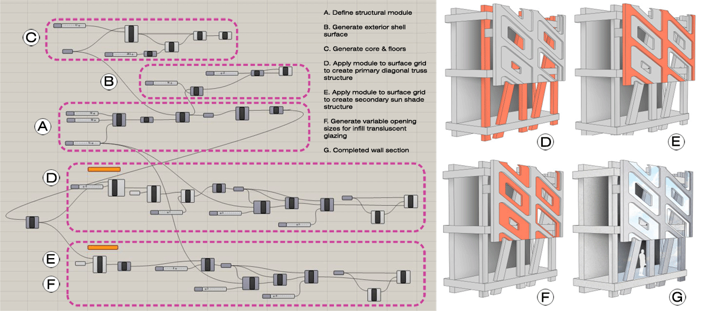
Design and Grasshopper scripting process for conceptual tower
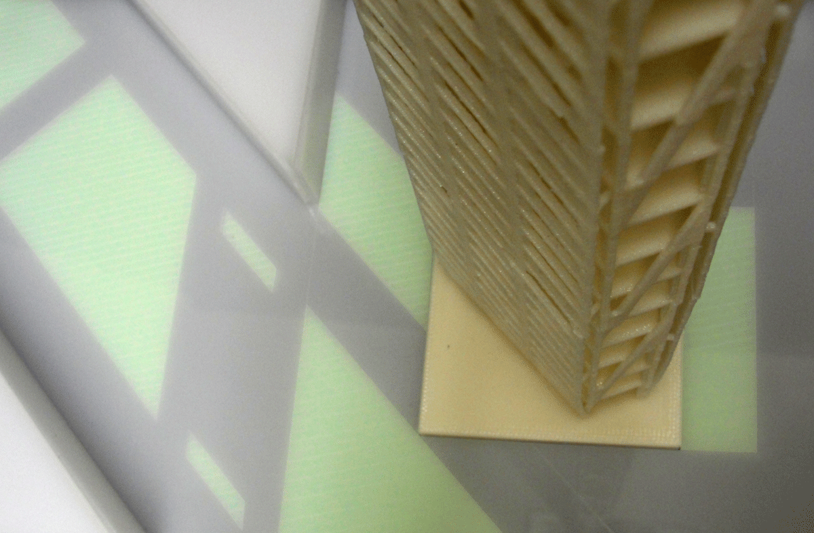
3d Printed tower concept in context
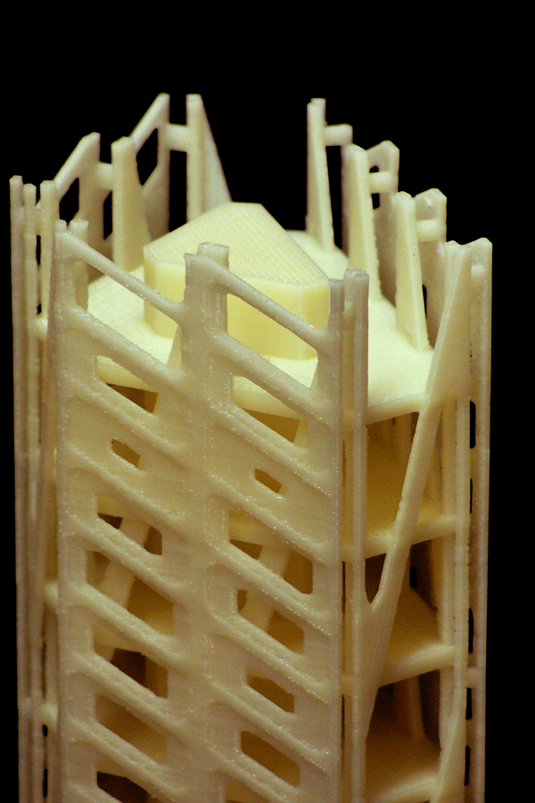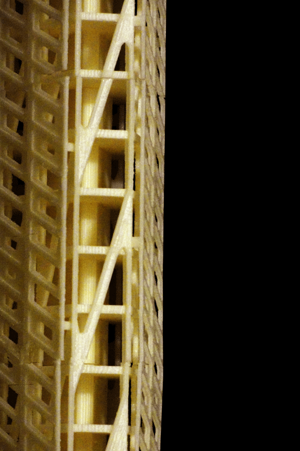
Details of 3d printed tower concept
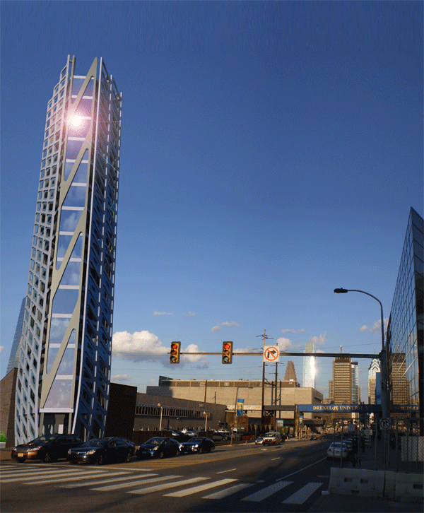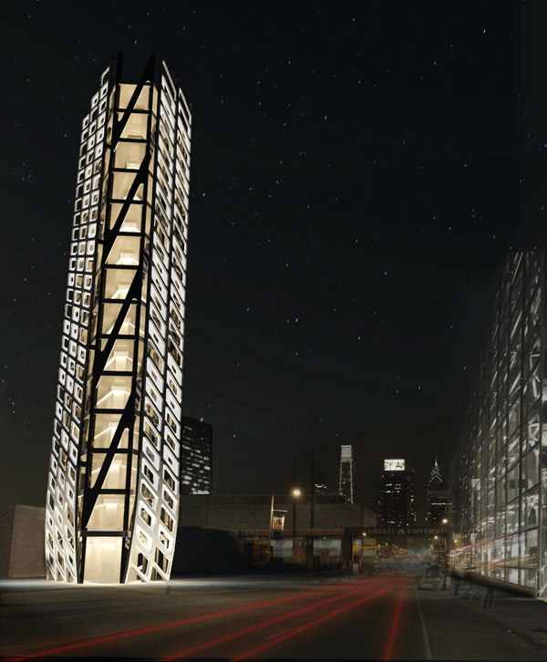
Renderings of proposed tower and site context
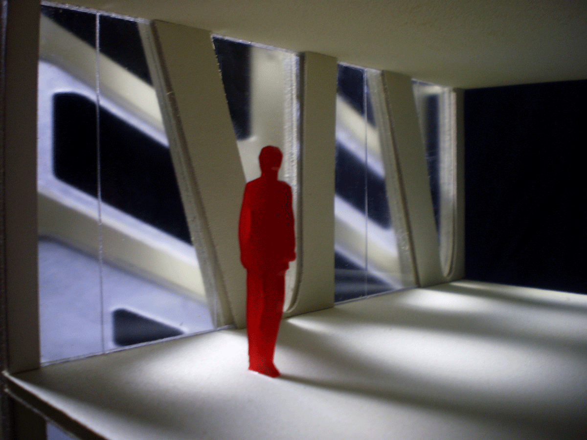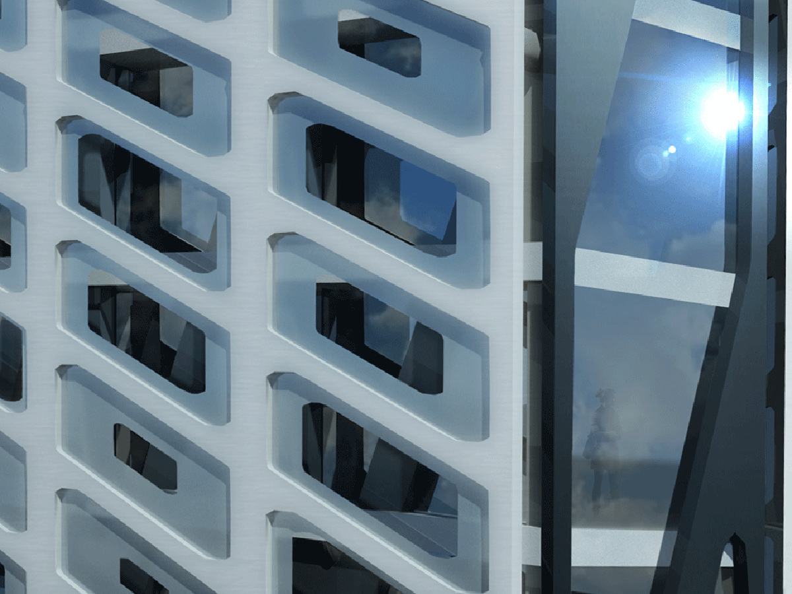
Interior view of detail section model | Proposed rendering for built condition of screen & structure